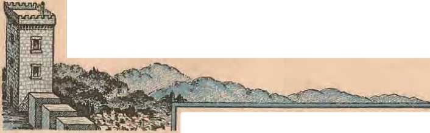
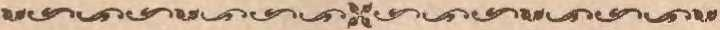
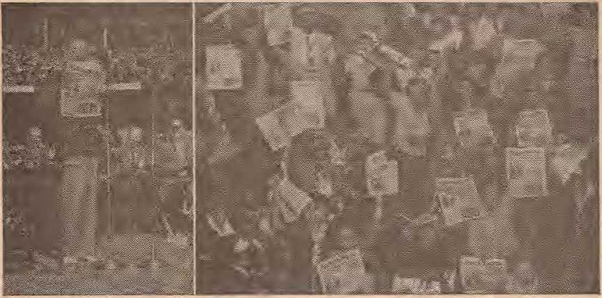
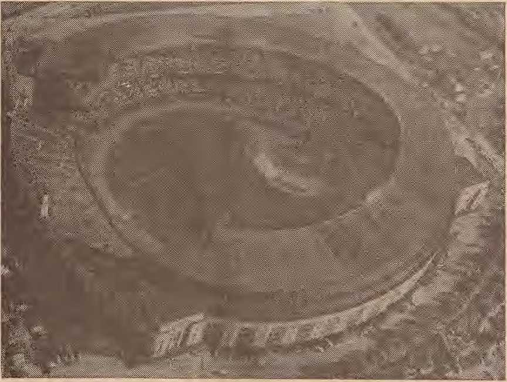
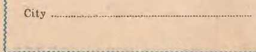

Held by Jehovah's witnesses Qlt'veland, Ohio, August 4U1
POGROMS. IN POLAND
Who is responsible for continued anti-Semitism in Poland
Representatives of many nations convene in unity and harmony
Ingenious devices record a thousand pulsations per minute
Rousing call to awake grounded in Scriptural injunctions
SEPTEMBER 22, 1946 semimonthly
THE MISSION OF THIS JOURNAL
News sources that are able to keep yoti awake to the vital issues of our times must be unfettered by censorship and selfish interests. "Awake !" has no fetters. It recognizes facts, feces f^rts, is free to publish facls. It is not bound by political ambitions or obligations; it is unhampered by advertisers whose toes must not be tread upon; it is unprejudiced by traditional creeds. This journal keeps itself free that it may speak freely to you. But it does not abuse its freedom. It maintains integrity to tt-uth.
"Awake!" uses the regular news channels, hut is not dependent on them. Its own correspondents are on a.ll continents, in scores ofnations. From the four corners of the earth their uncensored, on-the-scenes reports come to you through these columns. This journal's viewpoint is not narrow, but is international. It is read in many nations, in many languages, by persons of all ages. Through its pages many fields of knowledge pass in review—government, commerce, religion, history, geography, science, social conditfons, natural wonders—why, its coverage is as broad as the earth and as high as the heavens.
"Awake!" pledges itself to righteous principles, to exposing hidden foes and subtle dangers, to charnpioning freedom for all, to comforting mourners and strengthening those disheartened by the failures of a delinemeiet wodd, reflecting sure hope for the establishment of a rights eous New World.
Get acquainted with "Awake!" Keep awake by reading "Awake!"
v^^^^-.^^^^u
POBLJSllllSt:liUIONTllLT Br WATCHTOWER BIBLE ^AND TRACT SOCIETY, INC.
117 Adams Street Brooklyn 1, N. Y., U. 9. A.
N. TI. Knorr, i'l’CHideiit W. E. VAN Alinntt;H, 8ecrctii'7J
Five cents a copy
Romlllance^: l'leasc remit by p^^1 nolo dr by Pl1>taJ or Ncfe DO"Y oiler or br bunk 1^. rnnrnw fc fet in ox,
oriifaftTT iiiafls, rbore is ao :mnir.r^
trom countriles wil<N !he Soo!ie(}" liiis no DNneh atneet OIOl' be mndc to the Brooklyn om.,. but onlr bg nt^matlronot posl1ll !MileY ord<r. Be^ eelpt ot n mw ot rt^ew^J suhscrtpUoo wm b« ac:J<nowlodg.d only wbeti 1'\!qu,.Wd,
Notice to St'lscnrmms
One dollar a year
llotiee of uDlration: Such wtlce ls ••nt rltli lbs Joumil lit """t t"o lo;sues before the sub scriiului. «rirc. P1MSV renew praat*!?. .
Change ot addreu; PR use HxtneJ uitf Change of ar!dms dlz.et to Us roth<r ltlln to the post omcu. Your rohfuell sbould r^aclJ us •t lOQst thr.o tfe-iu bi!fore 1 he dile or -tmwe with •hlCh Jt 1.s '" toke ell'e<:t. Send your old as ll<lll as tl" ''"w O<l<^^.
K11tari as tr.eend-eiass matU!r at Btoo^p, N. T., Act or March S, 1879. Prlotea 1D U. 8. A.
Po^'Oms in Poland
Political Causes of Pogroms
Hierarchy Responsibility for Hilli^^ Cardinal Illmul's Proclamation The Curdinal Is Rebuked Repercussions ton the J>ublic Can Pogroms Be Prevented?
Glad Nations Theocratic Assembly
Universal Petjee Day
Conclusion
Sea Wolves
Precision-made Bail Bearings
3
4
5
5
6
7
7
8
15
16
17
18
Judasm vej"l'lus Moses and the Prophets 19
Inebriates, Four- and Two-legged
Catholic Convent lliiles Mussolini's Body 22
''I Will Curse Yom- Bkssing::;"
"Thy Word Is Truth"
/WWE/
Volume XXVII
Brooklyn, N. V., September 22, 1946
Number 704
FOR six long years millions of men fought, bled and died in a terrible world war. Presumably those men were -fighting for the purpose of destroying forever the beastly forces that enslaved, persecuted and killed innocent men and women. By Jnly 4, 194(), the memory of those war yean; had not died; and so it vms a shock to the world to hear on that dav that .fl Jews had been massacred ill Poland, the very country where World War JI began in. 1939. Such an organized massacre of helpless Jews as that is called a pogrom, meaning "devas-liition".
Why such killings continue to plague the peace of the world is what thinking people would like to know. Wily were such victims Jews/ AvVl1y tlid not the officials of Poland prevent iU Why were tliese innocent Jews killed by a Catholic mob? Why did the Catholic bishop:; and cardinals not prevent it1 Weighty questions, thc::;e, that press for an answer. But to arrive at a reasonable answer one must review the facts.
On the morning of July 4, at eight o'clock, angry men and women began to gather iit front of the Jewish headquarters in the city of Kielce. By eleven o'clock a moh of several thousand had assembled with murder in their heart::;. That afternooni by three o’clock, they had broken into Jewish homes and stores and had beaten to death 41 persons, besides seriously wounding scores of others.
The fuse that set off this explosion of mob violence was a story of a nine-year-old boy who deliberately lied that he had been kidnaped, and Iwld in the Jewish headquarters in Kielce for three days, and that while there he had seen the bodies of iifteen Gentile children whom he said the Jews had killed. Later he confessed that he actually was at the home of friends of his father in the neighboring viJlage of Pielmrki.
Another hoax was used by several men dressed in the uniform of the PoliSh army. They went to the door of the Jewish headquarters and promised to lead the Jews to safety through the mob. When. they had the helpless Jews outside they turned them over to the crowd, who heat them to death iln A most brutal manner.
This outrage did not occur on some 4th of July during the Dai'k A.ges, but in the year 1946. It was not executed by Jew-hating Nazlis, but by Na7J-persecut-ed Poles. It was not done by uncivilized cannibals, but by so-called "Christian" Catholics. But whyl
At first glance it would appear that tho riot was purely an anti-Semitic outbreak of race hatred. Careful observers, however, admit tliat there was more to it than that. \Vhile it is true that there was hatred of the .Jews existing, yet the motive behind the riot that kindled the race hatred to the burning point was a sinister political one.
Prior to this outbreak of violence there existed, and continues to exist, much political tension in Poland. Various political groups within tltp country war with one another to increase their power in the government. The referendum that was held on .June 30 did lint im prove the sitnation either. In fad, soilie claim that the pogrom a few days later developed out of the dissatisfaction over the outcome of the referendum. It was coincidental, to say the Irast, that the pogrom occurred simultameonsly with the pre-liwimu-y annoirncement thut the referendum calling for abolishment of the Senate had lieen \von by the present gov-ermnmit.
Political Causes of Pogroms
There are two general divisions of for.ee in Poland: tJte Soviet-sponsored Warsaw government, which has Comnm-nistic leaning::;. and the London Polish govermneut, which has the. full support of the Hierarcby and Catholic interests in England and America.
These forces are pole:-i apart in antagonism and are ho 111 powerful. The Warsaw government, nf course, has the immediate power of the goYernment, but the London Polish goYernment brings much pressure to Iinh' on tlte internal affairs through the Catholic hierarch within the country, the gtwrri I la hands in the forests, and the PoJi;<;Jj armed forces outside the country under the leadership of Oenerals Bor and Anders. Anders' forces, are estimated to he 1S0,-000 troops. mid they stand as a coup d'etat threat. The powerful Peasant party, which is Catholic under the limd-ersldp of 'Mikolajezyk, also agitates Poland's equHibrium.
VVltlt such internal stresses it is little wonder that following the wholesale massacre of Jews in July tlte various factjons immediately pointeO the finger of accusation at the other parties. First of all, why did not the government in power prevent it? Does it lark the pow-ed Nationally, it probably has suJlieicnt power to prevent an overthrow of government, hut locally it may be weak. This is gathered from the report of ,V. g, Lawrence in the New York Thn.es of July Hi, 1.946:
It is the opinion of all neutral observers who have been in Kid.ee that the secret police and military did not act with normal speed or strength against the moh. It is pointed out that in a cmmtry where gunfire is normal rather than unusual in breaking np crowds, no shots were fired at the gi’ouj) that killed the .Tews and that none of the mob was killed even u ficr it. had killed forty-one Jews and four Poles.
Local weakness of tl te present government is seen, too, in the fact that it was necessary for the government to arrest the local commanders and deiuty commanders of the securi ty police and •'citizens militia". There seems, therefore, to be no j)oint in the charge by the opponents of the present regime that it was government forces that plotted the pogrom, for iiwh murderous riot only re-tlected the weakness of its law-enforcement ag-eucy.
The Underground Guerrillas of Poland were also blamed for the murderous assaults of July 4. These elements have mixed characteristic::;; some are anti-Semitic, some arc anti-communistic, some are nltra-faseiatic. All are opposed to the present government and arl' a law unto themselves. It is quite probable that some of the ringleaders of the pogrom mohsters were of these groups. It is also possihle that they were the ones tltat cmviininied thf' massacre. However, it not executed without support •and backing from still another source of power.
And wha t is that sinister power? To sav bluntly tltut tlje Homan Catholic Hierarchy is that sinh;ter power is to invite an outcry of criticism from many people. Proof must first be offered to suhstantiate such an assertion. 'the leaders of the Limimgrouni!. savs Stanley Pieza, stall correspondent of the Chica-
go are/ild .twww. are "peasants, former soldiers iii the valorous Polish army, women of great couTage, Catholic Clwrclt officials’". More proof follows.
Pogroms originated in Russia in 1881, and for a number oi yeaTs thereafter were identified with Uie cruel czarist rulership. Yet Russia is not the only country where such wiekedness has flourished. Sinee the birth or t Iw Polish nation pogroms have been identified as a part of its social standard. Nor was this blight on the PoJi::li nation removed by the destruction of thr anti-Remitic forces of Hitler that ruled. Poland. A dispatch in the New York Times of July 17 said:
News of the pogrom at Kielce may ha\e shocked the outside world. Inside Polaml. so far as can be seen, there was hardly a ripple of surprise.
Anti-Semitism among Poles. according 1.o foreign ohsej’Yci’s, is doep-Tootf.d and intense, and some Poles Ihemsclves admit it. Stweral well-educated awl presumably intelligent Poles huve told this correspondent that at least Hitler was right nbout one thing—he wanted to Idll all th e .Jews.
Hierarchy Responsibility for Killings
Rememher this important fact in analyzing the causes of Polish pogroms: Poland is a UathoJic country, F:5 percent Catholic. For generations it has heen under the influence of the clergy. Few countries today have a Catholic population as obedient and subservient to the Hierarchy as Poland. .It is J'or this reason that a group of Jews pleaded witli Hie liead of the Catholic church jii Polaml, Cardinal Hlone, a few weeks hefore July's outrage asking him to issue a pastoral letter to the Catholic population denouncing anti-Semitisin and thus stop the killing off or Jews.
And what was the response of the cardinal to the plea? Did he seize hold of the invitation to prevent the slaughtering of innocent men and women! Shocking as it may seem to honest Catholics, SEPTEMBER J2t, 194£;
Blond did not lift so much as a finger to prevent it. 'the cardinal said that he thought, '"there were not sufficient factors to justify such a proclamation", in spite of the faet that on June 14 it was reported that there was a tluee-clay pogrom in the city of Stettin. Yes, in spite of the fact tliat 1,000 Jews had been murdered at the hands of Poles since Y"-E day'
Finally, al'mr 41 persons had heen done to death and public indignation in this country and elsewhere was running high, aud the number of accusing fingers pointing in the di region of the Roman Catholic Hierarchy had increased, the cardinal, to save his race, came forth with a feeble dcnnnciation of tliese wan -1 ou nuu’d!!*:;. ‘'1 will now reron sider the appeal for such a pToclamation," sajd Hlond, “1mt J' must con:snlt. the bishops of Poland before doing it." Rather un-n5:ual, is it not. for tl cardinal to ''consult the bishops” hefore issuing a proclamation?
Cardinal Blond’s Proclamation
The wording ol' the proclamation is very interesting. Hlond m••■■d no adjectives stronger than '•tragic'" and ‘''painful" in describing the terrible atrocities against humanity. 1 t was only a "regrettable event", The insincerity of the cardinal’:,; statement h:; noticed in the paragraph where, in referring to that gory dav of .Tulv 4, he said tliat it was a "tragedy”, not particularly heeanse 41 men and women lost their lives, but ratlier. "because it took place before the eyes of youths and young children.” One can almost spp the glycerin artificial tears streaming down the cardinal's face as he wrote those words.
Cardinal Hlond tiaid that the Kielee incident djd not occur for racial reasons. hut grew tup on a totally different basis, tliat is, H political one. Explaining what lie meani, Hlond said that it was "to a great degree dne to the Jews who today occupy leading positions in Poland's
government and endeavor to introduce a governmental strur.ture which the majority of the people do not desire".
The facts are that there were not more than five Jews in the government at the most. Some sav there were onJv three. But that is not the point. 'Yhat if tJiere were Jews in the government that "endeavor to introduce a governmental structure which t lie majority of the people do not desire’’, i:o that reason or excuse to justify the Idlliug off of innocent Jews, men, women and children, who are not of the government, just because they happen to he horn .Tews? Cardinal lOond savs “Yes*; hut no bon-est Catholic will agree with him.
Turn the proposition around. 'Would there he any justification for killing off innocent Catholics in America heranse there are some Catholies in Uie government that are inhrodiicing policfesi foreign to the American Constilution ? Wit"' should not the .J ewisb minority in Polund hove the same rights to h)ld governmental position:! as the Catholic minority has in America.?
Saul K. Padover. writing editorially in the New York newspaper PM, said:
As I sec it. the implications of the cardinal's statement are twofold : first. that it is permissihlc to kill people with whose politics you disagree; and, second, that it is justifiable to murder otherl'l of the same minority with whose politics you disagree.
The Cardinal Is Rebuked
The PoliHh American Congress sided with the cardinal and. said that the hideous pogrom Wtts merely a ''physical protest agninst foreign political provocateurs". Jewish organizations, however, took an altogether different viewpoint of the malicious mmrder of their brethren. An executive of the World .Jewish Congress said tliat for Hlond "to invoke a disputed political situation as reasons for murcler of innocent men, women and children is most certainly an act that runs counter to all rules of humanity and religion". Continuing, tJie statement said: "As a result of ius siatement, Cardinal Hlond will fml it ili.fli.cult to free himself of co-responsihility for anti-Jewish acts that might follow in the future/'
The chairman of the I nterim Committee of the Anierican ,Jewish Conference. which represent;: sixty-three nationai Jewish oTganiza tjons, said in heltalf of the conference: “Tn justify the murder of Jews by the allegation that Jews 'occupy the .leading pmd f ions in Poland's government' is tantamount to absolving the murderers of their guilt and serves to undermine tJic earnest efforts of the Polish government to extirpate antiSemitism.”
In a telegram to 1 ’resident Truman tJte New York City chapter of the Methodist Federation or :':lo<-ial Service said that Blond W"l'ts merely repeating "the main propaganda line that brought the lUtler regime to power". Therefore, the telegram asked that Myron C. Taylor he recalled from tl le Yatic’an "in view of tlte political interference of the Vatican State in Poland in shielding pogromists and in blaming ,J ewisli otlicials of a friendly government for murders instigated by others'’.
The American .Jewish Committee in a letter to President Trnman said that the "exposing to persecution and terror an entire group, because of the politics of some individuals acting entirely on tJieir own, is contrary to all principles of humanity and religion’’. They asked, therefore, that Truman request the pope to interfere with tl if\ killing of Jews in Poland by Catholics. 11abhi Goldstein, president of the Synagogue Council of .America, thought best to appeal directly to the ])ope by cablegram for Jielp in behalf of J ewn of Poland.
But Pius XU was too busy to give much attention to this matter of killing Jews in Poland. He was husy offering up "his paternal pTayer tlmt his [Greiser’s] life be spared". Greiser, it will be re
called. was one of. the worst war crim-nials tliat ruled Poland under the Nazis and he it was that fiendishly butchered many thousands of pepple.
Repercussions from the Public
Righteously disposed people were enraged over the revealment of the Hierarchy's attitude toward the pogroms in Poland, and some of them expressed themselves very forcefully in letters to the public press. A fp.w of such letters were vnblishcd. Excerpts from some of these written to the newsj)aper PlJ.f are as follows.
Cardinal Hhiml's stntement • . • is a callous attempt to throw responsibility for the massaci’c nol, upon the murderous hut upon their victims. While he does not openly eon-done the pogrom, it. is regrettable indeed that he should have felt the necessity of supplying justification for its perpetrators. His implication is that the fault lies with the Jews Ihemselvcs-with the persecuted—instead of with !hose who persecute them.-.ARKOLD HERRICK.
J acob Schneider writes with sarcasm:
One must he grateful lor Cardinal Hlond's statement. There has been no more forthright statement on the part of the Roman Catholic hierarehy as to whoro it hus 8tood, -in the last 25 years, with reference to oppression, persecution, and mtii'lc’j" fur political purposes.
Another writes:
To accuse a prince of the church of unwittingly acquiescing iu his country's racial blindness is to invite harsh criticism from church people who think clergymen beyond a layman's views. But the fact still remains that 41 Jews •were slaughtered in lilind fury on the part of ignorant louts. . . . Forty-one dead hodies are 41 reasons why Cardinal Hlond should not have made his pronouncement, the way he did. If he is really aiL’dous to put an end to his nation's rotten antiSemitic record he should have directed all his fury as prelate toward his own huge parish. They are the killers. The Jews are merely the dead.
An ex-journalist said, in part:
When men of God preach such doctrines of hatred, it is time for men of good will, of whatever religious or political beliefs, to cry out in the name of humanity against them.
Can Pogroms Be Prevented?
Following tile slaughter of July 4 the Warsaw government of Poland made a vigorous ejfort to bring the perpetrators of the crime to justice. Twelve persons were rounded up and tried by a military court. Nine of thein were sentenced to be hanged. This is said to he the frrst time in Poland’s histoi'Y where members o.E a pogrom mob were executed for their crimes.
But the hanging of nine beasts does not rectify the killing of forty-one intelligent humans. If does not make amends for ‘‘fatally beating a pregnant woman who gave bi rth prematurely to a dead cliild before she, heTself, succumbed to injuries”, as reported by tlte New York Times. Nor ‘vlll the execution of suciJ mobsters prevent future pogroms in Poland. This is evidenced bv the fact that nine Jews were seized and held as hostages for the nine gangsters that were executed.
What, then, is the remedy? Is it for the Jews to flpe Poland completely? Before the war there were 3,000,000 Jews in Poland. Now it is estimated that there are less than 160,000, and most of these would like to leave. It is true that if there were no Jews in Poland there wonld be no reported killings of them .from tJtat country, but that does not argue that peace would settle down over Poland. ‘the removal of the Jews would not mean the removal of the cause of th(‘ persecution. the canse of the pogrom is deep-rooted in the internal political tension between the two great philosophies of Russia and the Vatican. Both clash over the issue of domination of Poland, and the Jews aTe caught in the rrJ.ddle of the struggle.
SEPTEMBER 22, 1946
Held by Jehovah's witnesses Qlt'veland, Ohio, August 4U1
CM Nations Theoa'atic mbsyembly
WHAT nations are glad l What nations assemble Theocraticu lly f Certainly the reference coulcl not lte to the 21 nations assembled at the Paris jxaee conference. J.t was i10t an occa:;iun of glndness. Imt one fraught with suspicion and intrigue and selfish political maneuverings. Nt/ther was it a Theocratic- assembly of nations, for those 21 nations were intent on establishing a man-made world oTganir.ntion to rnle, and ignored Theocracy or Oo<l rnle. The factual answer is that glad representatives from inany nations assembled at Cleveland, Ohio, .August 4-ll, in a convent ion tic-voted to the Theocratic Government of Jehovah God. Jehovah's witnesses from all corners of the earth (•onverged on Cleveland for those eight day:-;, nnd titled their joyful international gathering the “Glad Nat ion f' Theocratic Assembly”. The brief report that follows will show the name true to tlw facts.
Delegates came from 31 countries, in addilion to the United States. Airplanes and oeean vessel:; brought them to the North American continent. By plane, by rail, by hus and by private car, thousands upon thousands headed Cleveland way from all points of the continent. On August 2, 3 and :l lliere were 38 special trains pulling into Cleveland, lonUpd down with Theocratic conveutioners. Opening day, August 4, saw more than 50.000 in attendance at the seRsions. Tlw mmther mounted until it reached ()7,O00 on Saturday, August 10, and thence :>h ot past the 80/100 mark for the public lecture on Sunday afternoon, August 11.
Tlie Assembly program, as it unfolded during the course of the eight days, revealed increasing gladness on the part of all the> clelegateR from many nations. Meetings were conducted in 20 different languages, with the hulk of the sessions holding sway in the most widely used, the English tongue. One did not need to Jjsten long to be impressed with the fact that th is was a Theocratic assembly, an assembly where Jehovah God and His kingdom by Christ were singled out as all-important. '.Each of the eight convention days had its own particular theme, but each or the eight themes related to .Jehovah's Thcncracv and service in the interests thereof. l Ligh-lighting convention discourses were those presented by the president of the Watchtower Society, N. H. K1101T.
'Kotes of gladness struck their highest pi Lelj('s w I ien tile numerous surprise releases of new publications were sprung 011 iJte assemhled conventi oners. How the thunderous applauses hurst from the vast audience and rolled out across the playing field embraced by the great horseshoe, double-decked Municipal Stadium ! Not a day oJ' th:: convention passed without some new release. \Vhy, even before tJio Assembly convened in its program schedule there was the release on the grounds of a postcard picturing Municipal Auditorium and Stadimn and announcing the Glad Nations Theocratic .Assembly being held there !
Harvesters’ Gladness Day
Opening; da,;, August 4, was thus themed. Mornbig assembly for field service was followed h\‘ au afternoon session that saw Municipal Auditorium packed out, alojig with auxiliary halls, nnd many thousands overflowing ont onto Hte M all and sui’i’oiiDdiug- ground;. Two discourses based on Wftfcldmvei^ articles wetc separated by the conducting of an lionr-long model watchtower study by demonstrators on tlte stag-E\ of the Auditorimu. l\1ore than 50 participants seemed to transform the stage into n typical Kingdom llall of' .J ebovulfs witnesses, ancl on l s the portalJe micro-pli!ine that picked np audience comments and the rustle of thousands of Wal.cli-tower pages as the study progressed kept one reminded i hat multitudes of enn-ventioners were "’sitting in" on the model meeting.
Gladness was heightened for the evening session by the Assemhly's moving into the spacious nhmici pul Stadium, where ull could l)e comfoduhlv accommodated. Tlue heart-warming address of welcome liy Conve 11 t ion t'lmi rman H. Suiter was followpd by F. W. Franz' discourse on •'The Harvest, Uie End of the World". This dosing speech of the opening day lifted the "Iharvesters’ Gladness'' theme to its highest pitch by a clear exposition on .J e::;us' parahle nf the wheat and tai'es. The full text of this talk was then released in the form of the Watchtower magazine: issue of August H5. It 'Yas i he first release 011 tlje convention program. Coming on the opening day as it did, it sharpened to razor-edge expectancy and anticipation for releases that might follow as the i‘e-m mining seven davs of convention unfolded. But even expectancy nili1 anticipation did not reach the heights uf the reality to come.
"'Defense of the Gospel" Day
August 5 was devoted to stirring up zeal to defend the gospel, aud to supplySEPTEMBER 22, 1Y4fJ ing practical information and training toward that end. As tlw morning as-scmbJy for field service was conducted, delighted eyes feasted on the beautiful platform that the hands of witnesses bud erected overnight. How brightly in the morning sun its harmoniously hlended hues tlidi shine out there on tlte playing fieltl! The convpntioners in general were soon dismissed for witness work among Cleveland's population. Tml remaining behind for furt her sessions were four foreign-language groups. It was tire Hrst sejues of the H} meetings scheduled to Ue held in foreign tongues.
The afternoon se:-:si. om Ii pn.rd the Society's legal counsel, H. C. Covington, discourse for an hour on “Proper Conduct hi Court". Tlte important thing is to properly defend the gospel when in court.. tD p;i ve a witness or testimony eon-cerning tlw King’dom and the issues at stake. Let the grajitiiig of victory Test with .J f-lwvah G ud. 1'lw speaker was succeeded before the microphone by the convention chairman. IIis t.ojue was "The Messenger", and was climaxed by the mmounccnitmt that the Society. would publish its own convention newspaper, and that the first copy of tJiis eigltt-page tal•Inid was oJT the press and ready ami waiting J'or the witnesses right now! Five such pig-ht-page issues were ro-leasetl during tlw Asseinldy, and to these iRsucs <•>igltt additional pages wern added t\t lliP rlose of the convention to f otal up to a J-S-page complete report of the Glacl Nnti rm; Assmnbl y, entitled "The Messenger’’. This complete report is being mailed to all parts of the gng-lisli-spealdng world.
Release nf t1i<? initial eight-page issue on "Defense of the Gospel" Day was appropriate. Why so? Well, the public press generally is given to distorting news to plea::;e private political and religious and commercial interests and opinion, and especially so does it do tltis relative to reporting the trutlj concerning Jehovah's witnesses. Tlte magnzine
Left: Cbail'DlllD rcltoRSI!1! Messenger. Right: Couveutiuners rejoice over it.
Aerial >i!:<w of Stadium during Wednesday aftetnoou session
Time, for instance, glibly misrepresented the> witnesses and the A sseinblv to plea$e religious interests tliat apparently diet ate policy for Time. If all tlje other articles ill Time aTe as unfounded as thes <jiie, the magazine renders great disservice tn the eountrr. At any rate, the Society foresaw such misrepresentation, from long experience wilh tile public press, and arranged to publish a complete report of its owii that would honestly relate convention doings and that at the sante tiwe would serve as a defense agaim;t public press falsehoods. (i\. complete report on the Glad Nations Theocratic Assembly also appears in the Watchtower magazine of October 1, 1916.)
The evening session of the second day was given over to Timocratic ministry training. Once again a typical Kingdom Hall group of .Jehovah’s witnesses occupied the platform, this tiwe to demonstrate the proper conducting of the weekly course in Theocratic ministry meeting. Botli iusii’uction talk aud student talks set a fine standard for co .lying. This hour-long demonstration was given pmctical application in fielU witnessing by the series of seven demonstrations by couples, iii t-acli case one acting as n witness at the door and the ot her posing as householder. Objections of householders were ahly refuted by the wit-ne::;::;e::;, who mndt> tactful nse of information gained at tlw Theocratic ministry study.
"Good Courage" Day
After morning sessions that followed tlw general pattern of August 5, the afternoon session tjf August ti lizard the sounding of the Assernhl y keynote by the Society's president. N. H. Knorr. It was the first 8chedu1ed appearance of the preside])t 011 the program. and enthusiastic conventioners cheered lustily to indicate full approval of the keynote message "Fearless Against the World Conspiracy”. More tlum 55,000 cl o8ely attended this discussion based on the uigljth chapter of Isaiah's prophecy, wherein is foretold the vain efforts of men and nations to combine in n world uiilt;n for strength. The spirited declarations that Jehovah 's witnesses would not he stampeded into following the crowds in trusting in any such world confederacies, hut that they would stand fearlessly again st tbjs world conspiracy that is actnall - pitted against God's kingdom. drew thunderous applauses from the assembled thousands.
The keynote address made a resound-
Two of Uic pairs of demonstrators that gave practical illustrations of putting Theocrntic ministry traiD^ iug to use in field SEHvice
SEPTEMBER 2:l, 1945
11
N. IT. Knorr releases JMliel
ing hit with the Assembly, hnt it hardly matched tlip (hdlls that raced throug-h the vast audience at the subsequent evening session. A half hour of singing and experienc*f»-relating soon passed, to nmlw way for tltc’ energetic delivery i.if the discourse "Awake!" This cnll for alertness as to world !ia j/penmgs wns hacked up by L.lu: “Twenty Minutes of News Hems" tltat followed. But An Answer to the Rousing Cnir e-mne in fullness wJen N. H. Knorr stepped to the microphone to deliver tlw extmnport:lncouK speech that was so named. The apex of tlnull::; cmne when the president held aloft tile new magazine Juw/o','1 A::; realization of what was being- released dawned fnllv upon the excited throngs the incTeasing applause swelled to thunderous volume. A glaJ. Assembly ? Overflowingly $0!
Servants’ Deportment Day
Wednesday morning. August 7, varied from the other forenoon sessions by substituting- experiences and three half-hour discourses in Fmgjjsh for the usual morning lielfl service program and foreign-language meetings. These talks :-;et the pace for tt day dedicated to waiters of fiold service, all being on Ute full-time Kingdom work of pioneering. The afternoon session brought to the convention's iiotiee publishers and experiences ftoui different part:; of the earth.
But the deportment of Jehovah’s servants runic; into sharper focus during the evening meeting. It was the time set aside for a demonstration of a model weekly fwrviee meeting of .Tehnvah's witnesses. The speakers' plat I'orm was very l lutroughly converted into a Kingdom H all setting. lip iront of tlw some threescore elmir: for the witnesses playing the role of audience was a piano and the Company ('hart showing the group's activity in field witnessing. On the side wa:-; tile company's Theocratic library, nnd to the wear were such essential de-pnrtnwnts fit; bookrooni, territory, back-call, nnd other local organizational aj‘-rangeiiieiits for Ute efficient conducting of the witness work It was into this realistic setting tlmt early arrivals he-g’an coining about a ImH hour before the sdwdnled time 'nr service meeting to start. Singly and by two's and three's newcomer::; swelled the audience till its l'nll numbers were present. A strong ripple of appreciative laughter swept through tlw observing audience of thousands in thf' Hhulimn as they noted two lateconwj^s make a last-minute rush to join the small Kingdom Hall audience on tlre platform. Even this gave a familiar toucli of' reality. tA-rt nmly the hour service meeting that followed was a good .model for aU companies- to aim at.
Striking the limtle on “Rerwmts' De-portnwnl Day”, the Society's president gaYt'> excellent Hcriptnral admonition to the conventioners regarding- proper de-
Delighted witnesses display thcir !.(ift copies of the' ncw mognzwe .AwnkeJ
portnwnt for tlw Clit’ist iaii. In a powerful presentation that miiwed nu words tlw siwaker clearly showed the sharp, eleun-eut distinction there must he between th:’ Christian and this nndpun old world. The necessity of "Keeping Kn-spotfed I'l'oiii the World’’ \ the title of Hie talk) was established on solid Hihle Jounda tiou, the tex.b al .Taues J : :!li, :21 and ±:4 being particularly Rtre:-si‘cl.
Publishers’ Equipment Dan
The morning program I' or A ii.gnst S reverted ltac-k tn Hue general outlaws t'or 1lw mornings or A ugm;l :) and f;, namely, u iidd service assembly and four meetings in foreign languages. 'l'ltp afternoon session lwJd a grand surprise in stor... Two (lisi’iiurst’s 011 ‘‘Laying- r p.> Sonml \Vi:-;doin" and "Helig-ion versus Sound Wisdom", dealing with tlj<: histoiw uf' the writing of 1lw Bi hie and tlte rooituries-old opposition of religion to the Hiltle, led up and into the third programed discourse. "Kq nipped for Every G uod Wurk." T his linal 1 alk of the sIO'ssinn wm; presented by K fl. Knorr, and st£'a<lily mounted in Its argument toward Ow afternoon's surprise releafSp of a new SEPTEMBER 22, 1!146 book eutitled "Equipped l'or Every Hood Work". 'I'liendu is t'niitniued information on tlw nible, it:.: contents anti hif:-l ury. the time and place rtf' eneli Bible 1 i< H.d( s writing. and w lwm Ootl u:-;ed to Jwn On1 various hooks. The announcement dropped like a buinlishell into the i\ ssrmbly’s midst, ami j he bursting applauses, shouts and whistlings t-!pemed t(, fairly rocd< i\T nnicipal Ntadinm. Wacl-iii’ss had hit a new Ii igh.
Nor tlitl it subside for the fweninp’’ :t>s-:-:ioii, for then, after two preliminary lw lf-hniir discourses, the president again acldi‘PH:-i<'d IIh* convention, 1 hi:.; time on "The I'rohlejns oi" Heeimstriwtion und J’.;xpan;-;ioir. !lappy indeed were .Teho-vali’s wi 1 tjp‘:-::.<:<^s to hear al that tinw hnw tlwir voluntary c-onlrihiititins to the Su-c’iety Jmd been expended in rerunst’net-ing and I'xpnncling- tlw Kingdom work through Branelt organizations worldwide. AnuotuH'i'iiieiit that the lteadtpiar-ter}; Bptlwl hoiiw and factory must soon be enlarged to keep pact- with the in-crcasing \vork delighted all these scores of thousands interested in Jehovah's kingdom service.
"All Nations" Day
Friday, August !), was striking! • different from the other seven eonventiou days. First to di;tingnish it was an early morning discuurse on water baptism, then a moving of many hundreds of candidates for innnersinn to Edgewater Park on Lake Erie. For upward of four horn's complete submersion of the candidates in the waters of Lake Erie continued, til 903 meu and 1,699 women, a total of 2,602, had thus thrabtihed their consecrntion to do .b-ii.-v.-,h> will. Kews-reels in theaters throughout the nation brought this immersion service into wide public notice. But bad< in tlte Muiuci]tal Stadium the day’K program was under way. It was titled '‘The madness of the Nations with His People", and continued over from the morning :-;eHsion into the afternoon un<l eveuing session::;. In aU, the conveutjout>rtiheard the Society's representative::; from 31 diJi'ei'eut countries give ten-minute reports on the Kingdom work in their respective lnntls. 1'he cunulative force and power of the day's program l'teaUily gained monwn-tum, till at the close of the thirtr-lrst speaker's review the internationat scope of the Glad Nations Assemblv was indelibly impressed on every attentive mind.
Capping the events of the day came a surprise appeatanee of N. H. Knorr during the evening :-;cssion, and his malting of several delightl'ome announcements that gave cause for further gladness. Outstanding at this Lime was his announcement of the release of a new Spanish Bible concordance, published by the Watchtower Society to better equip Kingdom publishers working among Spanish-speakijjg peoples.
God’s Truthfulness Day
::aturday morning pnsses, with its assembly for Held service und Jast of tJie series. of foreigii-langiiuge meetings, and we find ourselves once more looking in on an afternoon session of the Glad Nations convention of witnesses. Bv now attptidunctl has climbNl to G7.009, and all sit with unusual expectancy as the principal speaker of thl' afternoon takes up the position before the microphone for his presentation of "Let God Prove to Be True". A1 ready the uttenJiug thousands ha\p heen overjoyed by release of a new Walchtou:er, four issnes of The Messenger, the new magazine Atcake! the new 384-page book ''Equipped for Every Good Work'', nnrl the new Spanish concordance. N evert hto lel's, t.bey remain expectant as the convention roJts through its seventh ilay. TJuit expeetancy met a more than full satisfaction when the speaker, N. H. Knurr, released the second bound hook of the Assembly, ''Let God Be TrwIn In iti'\ 320 pages can be found 24 chapters truati ng all the basic doctrines of thr Bible. In these matters it es lablishetl G ocl'i'\ truthfulness, despi te the contradicting traditions and creeds ol' organized religion. This new book turns the fnll brilliance of the Bible spotlight of truth on these vital and fundnnu>ntnl beliefs ami exposes tlte hea.thenishne!'s of religion's fables. Wlwt a boon "Let Gorl Be True" will be in gathering out religious stones of stmnhling tltnt still clutter the peoples pathway to cleat Bible Imowledge and life under Christ's kingdom rule!
The evening session held interest through its tltree-pnrt symposium on '•Prisoners of tlte Lord". It struck liarcT at the injnstict! heaped upon many Young male minister; of .Jehovah who had suffered federal imprisonment without the right to enter n defense in their behalf at time of court trial. Nomp 4,000 of J e-hovafr’s witnesses have been wrongly sentenced to a total of 12,000 years' penal servitude, becnuse they woui<l not abandon their covenant obligations to serve Jehovnh God. Moreover, courts of the land Uenied these ministers the right to defense hi such courts. Relation of these facts rou;ed the righteous indignation of the conventioners, and the au-
Municipal Stadium during the Saturday afternoon session
dieiwe was in a very recevtive frttiui' of mini for the resolution appealiug for presidential clemency. Th: Assemhly adopted unaninwutily tlw resolution NtU-ing for au appeal to President Tnnnun to grunt full purdojj to the unjustly im-prisom^d 4,000 ministers :Jii(l restore to them tJueir eivil rights. The session was ended by the instructive discourse " Children in the 'Time of the End’’’, which discourse appears in the September 15 issue ol' The Watchtower.
Universal Peace Dfly
Tlte eighth day, the final day of the Glad Nations Assembly, hacl nrrived. No assembly for held service on thlfl morning, for the entire day"s program •was given over to discourses. Six, delivered by representatives from Canada, Cuba. 'Finland, Hawaii, Mexico mid Australia, ••ansed the morning to vuss profitably,
SEPTEMBER 22, 19.46 nml left more iliaii three hours’ intermission before the widely advertised public lecture, “The Prince o'f Peace."
Prior to the deliverv of this discourse by the Society’:' president, the waiting thousand:-: seated Burlv in the stands were regaled by beautiful music supplie d by the convention nrchestra. By this dosing •lay the orchestra. Imd grown to 160 instrnmcntalists, and now their special arrangements of Kingdom service songs ftovNl out nver the loud-speakers to thoroughly and eompJetely delight the listeners. At three o'clock N. H. Knorr started delivering the public lecture, i:o more thna 7G,OOO persons. Latecomer; still poured into the mammoth :-;tndimu, necessitating' for the first time during the Assembly use of the bleacher section that ties together the end:-: ur the huge! donblc»-deeked, horseshoe-shaped covered seetion;, of seats.
15
A ttendnure mweidvd X0.11110 on this occasion. They heard dpdaivd in no un-C" rtuin terms t liat. jH’at’i’ will Hot eoiiif’ by any world federation c.f nations. hut titat only throng!t J ehovali's appointed "Prince of Peace*’, Christ .lp;-;ns. would lasting peace dotlw lld::-: earth. A tlinr-(ing’h Scriptui't! iirgutnent proved that such hopes in l'hrist’8 kingdom were not wishful tltinking. _\ t the conclusion the fifth i ssue ot' l'ht‘ 31e!f...euuer was released awl a free copy presented tn all in atlt'HdnnN'. Ii eontnint-tl the full text of tilt’ public }r?dui‘i‘ juiit heunl, namely, "The Prinet" nt' Peace."
The Assmildv inly hHvt' passed its trlinmx by ovrnin.g-sc:-:sion time, bnt nonetheless il was Jit tingly rapped by the do:-:ing i't‘}Hii‘f liy Cn}jvei\linn S<-*rv^ ant C. R. Ile:-::-:ler and tilt’ "Farewell Admonition'' given by N. H. Knorr. Outstand ing was President Knorr's diRclo-surt-' ol' a series nf conventions in many tintions during HJ47. And till?' information that lhf.' 1047 convention in the United States would Jw Itpid somewhere in t'al i ft । rnia t ow:h<>il off one of the great-e:-:t bursts of ajiplau::;t- of the entire <.>ight-ila\ Assemhly!
Conclusion
This report has only touche<l on the high light :-; of tlw convention program. Lack of :."jj<tt:i"' forhids extended discussion ot' t lip di:-:eonr:-;cs nr other convcrn-tion adivitieK. However, thf* smootli-miiniiig orguiiizmtimi uf Jeliovnlt's wit-Ht-:-:sps^ usseinhliwi neYPl' fails to <.>xeite iiiiii’h ci'innnent from outsiders. The unitY <i nil :‘!iii wt.lirwss of operation is due to .klwYah's :-:piril upon the mnny department s. H ooming doparlj t wnt secured ae-commodations for over 40,000 delegates. The trailer camp, over two miles long, became a city of more than 2OJOO. Cafeteria fed tens or thousands tlail v. More than a srore or other departinemts insured orderly handling of the crowds and supplying of all tJie conventioncrs' needs. They were staffed by some 15,000 volunteer workers. Typical of comment on the orderliness or Jehovah's witmesses iu convention assembled is the following statement, reportedly made by the Cleveland Auditorium and Stadium commissioner :
Aei'ial view uf part or the two-ruile-long trnilec eawp
During The Watchtower convention we had assigned 24 uniformed guards to the Exposition Halls and Stadium, hut found they had very little worlt, and were really more thnn were needed. Next wecl< we have another convention u preparation, for which we have reserved !'iOO uniformed police guards-and tJiat won't be enough.
a* —wjiGr
THE submarine is purely an instrument of warfare with no practical peacetime utility. From the time of Robert Fulton's "Nautilus" to the present the many changes in its design have heen made for the purpose of increasing its range and killing power, while at the same time attaining greater safety for itself. As an instrument of war it has demonstrated 'its death-dealing power during two world \vars.
The first kill of World War H hY .American submarines was on December 15, 1941; the last was listed on August l 4, 1945. Dming that time U. R submarines sank 1,94+ .Japanese vessels of all types, 194 of which were warships, with the consequential drowning or 276,000 persons. American submarine losses in obtaining this score were :i,fi05 officers and men, aml 52 submarines, seven of which were victims o!' operational accidents. Such figures show conclusively that snbmH rines are weapons of offensive warftu’Q as well as defensive.
In reporting tlw Navy’s statement and apology on submarine warfare the New York Times mentioned:
(1) An official admission by the N<ivy t hat the United States hnd violated the London Naval Treaty of 1930 in ordering unrestricted submarine warfare against Japan.
(2) A declaration that we "went the Germans one better" in developing •'wolf-pack tactics”. • • •
In its resume o£ submarine operations, the Navy admitted that ''we were bound by the London Naval Treaty of 1930" not to attack anything “but mi unmistakable m<m of war1'. In the Pueific, however, it would have been "impossible'' to distinguish between Japanese merchantmen and naval auxiliaries, the Nn.vy report snid.
Naval authorities, filled with enthusiasm over their recent successes, are inclined to thenk that future '•capital ships’' will be hnge submarines capable of remaining below the surface [or long periods of time, there discharging atomic rni:;.;siles and guiding them to distant targets by remote control. The prospects of extensively utilizing not only atomic energy hut the new developments hi jet propulsion, radar and sonar have made the future of Ibc submarine lool\ very bright from the militarist's narrow viewpoint Viewed, however, from the vantage point of the Bible the future of tljpg(-\ killers of tJie sea will be as short-l ived a::; earth's mortal war lords.
"He nmketh wars to c‘('.(uiB iwtii the eml of tlu earth; he hreuketh tltt> Ijow, mul cutetth the iipear in :mucin: Ite liiii’mflh the chariot iii the fire.
Be still, t.md know that I m (fiid/'-—Psalm 4ll; 9, 10.
SEPTEMBER iS, 1946
17
THIS is n fast machine age that literally rolls on hearings. In time of wnr men of science of one nation tty to nutstrip the technicians of other nations in perfecting engines of war, and in so doing they give particular attpntion to the hearings they put hi llieiii. They know t!iat efficiency increases if friction is reduced. fn linie of peal'e, engineers and designers likewise givt> special attention to bearings.
As a practical example of what antifriction or hall bearings mean, :i\lr. \YnU-mar, member of the Society uJ Automotive Engineers, ci ted their hrilliant performance on the railroads. "It has been
found that ten engines equipped with these bearings ean perform the work for which thirty-five were required formerly, while in many iwstances sveed has been doubled. \V(' have reports of ‘rdgbi cars' being hauled from Jjos Angeles to Uhlcago in forty-two hours.”
Ultra-preeision methods of manufacture developed in the last few Tears have maUe it possible to attain extreme accuracy in fittings. In fact, the tolennre of some is so close that an oil-mist spray is employed ns the lubricant. Liquid oil, if used in th t>se typel', would be so thick and gummy it would clog the moving parts.
1'o produce bearings of such accmucy gn^at care is exerdsed from the selection of the raw material right tJirougb to the final polishing. The raw material is a cold-drawn steel n 11 < •> mmally etmtahiing 1 percent carbon, 1.5 percent chrome and .3 percent manganese. It must be able to withstand 300,000 pounds of pressure to the square inch.
The final stage of production is that of polishing the surface of the Lall s to a tolerance smoothness of one-millionth of an incli. Their roundness has a toler-anre of J;J OOOOU of an in('h. This is nc-(•omplished by hold ng the halls between two grooved plates of cast iron for twenty hours. The upper plate is stationary while the lower rotatE's against it. Slow speed and low pressure are employed in this lapping proeess.
Ball bearings like thege whirh approach the mark of perfection arE> finding an ever-hiereasing use iii machinery of every type. There are today more than 7,000 unit sizos with lienring rings or holders from less than one-hnlf inch up to fifty-two inches in dimneter. BesiUes these standard sizf'H there are many others.
The latest is a bearing made up of three tiny shcel 1m1ls each the sizE> of a pinhead. Although 111,000 of them weigh • only a pound., yet they luiVP nn accuracy of 1/25000000 or an iudi. Ro fa r they liaYe heen used only in very ddieate recording instnuuents, sncJi as television and radar equipment, hut watchmakers arE> already thinking of using thE>m in place of jewels in watches. 'They would never crack and would last a lifetime without oiling. Having reached this attainment, research is now looking forward to making balls of the same accuracy, but having a diameter of only 1/64 of an inch.
To emphasizE> the great care that must be taken to make such flawless hearings, 1fr. 'Vollmar ::;aid: “The methods employed are so delicately accurate that the lacquer on the fingernails of a woman inspector, or powder 011 her nose, or n oue-degrQe change in temperature is guarded against lp!-<t it ruin weeks of work by defacing surfaces."
A wag is heard to remark liow strnnge it is that hardened 1'teel halJs, like strong men, can be so l:!asily affected by painted nails and powdered noses of women. Evidently both are •'precision-made".
JUDAISM purports to be the way to serve God, tie wny taught by Moses and the prophets sent by the Lord lo Israel long centuries ago. Actually, Jn-Uaism is as much a hollow flhell of true worship of Ood tL::5 is the "Christian religion" of this twentieth century. A voice from ,J ewish ranks raises thiH very de-nouiioement of the present ritualistic J ews; religion. It appears in a write-up in the weekly California Jewish Voice bv Dr. Louis G. Reynolds. The writer is somewhat confused in his terminology, referring to the one-tiine true worship of God bv obedience to the Law and prophets as the Jewish "religion"’ whervus actually that true worship was not a "religion" at all. The article follows:
Judaism
The Jewish religion or Judaism has undergone many changes since the days o£ Moses and the Prophets. Its official guardians, like the guardians of the various Christian sects, have submitted it to a severe and radical proc^ of cancellation until today it has become what Isaiah so long ago predicted : 'Precept upon precept, line upon line, here a little and there a little: With mauy of the so-called top-J cws it has ceased to be even that. With them it has become a sort of a pale, indefinite and incorporeal fiction. which expresses itself n costly temples and high-socieQ^ funrtions.
It is interesting to note, at least from a psychological and linguistie point of Yiew, that nowhere in bibiical literature can one find a collective name for the spiritual and social code, which is the essence of the Jewish religion. The only word which may he thus interpreted is "Torah", which is currently trnnsluted as "Law". Actually it is derived from the Hebrew verb "Yoro", which means to hit at the target, i.e., something that has or must have a practical uud useful aim. The word "Yahaduth" or Judaism is of much later origin and occurs for the first time, f my memory serves me right, in Midrash Esther, which, according to many authorities, was written as late as the Babylonian exile.
Be that as it muy, it is certain that already during the heyday period of the Palestinian Jewish commonwealth the Mosaic code as welt as the prophetic preachments had be-guii to undergo a serious process o£ deliberutt substitution. One is nstouudeU to find thut all the kings um1 the entire upper class of Israel and with only two possible exceptions, also those of Judueu. had tinuwn off J ucla-ism with the utmost indifference-one may say with tlw utmost. contempt—and hll'ned to the idolatry against which ltloses and tins prophets had so strenuously warned tlwm. None of their fiery warnings did any good, not even their threats of a divine punitive visitation. Even after the heroic l\:Iaecabeun revolt agalnst the henthen cults it was only the ritualistic and ceremonial items o£ tlw Jewish religion that were restored: the political, social and economic laws remained a dead letter. Thus we see hhow the touch of the ruling classes will vitiate and corrupt and even completely suppress the finest and noblest iilcologies. in Uti'S respect the Jews do not cli.fcr from the Christians. Tlwir respective nrisl ocracies or ruling classes not only dislike, but actual lr abhor au idealistic religion. They arc willing, of cotuse, to u.e-cept and worship a Ood. As a matter of fact they sorely need Him, but He must be a God who believes in reaction, in exploitation, in free cnte^rise and in the profit system.
Thus we sEe before us the sad spectacle of how the unnamed religion of Moses and the Prophets was und is being split up and disintegrated unUer the impact of men who 'call evil gootl and goc>d evil, who put darkness for light' and light for darlmess, who put bitter foi’ sweet and sweet for hitter'. (Isaiah 5: 20) Out oE the wedlock between the Jew-jsh clergy and the Jewish industrialists and merchants a child was born and they called it Juclaism. The word is freely mouthed in Jewish high-society circles. It suggests some relationship witli biblical ideaisi but when you look for them they an> ns hard to find as are the ideals of Jesus in the Christian ehmdies. The various Jewish sects do not materially differ from one another, despite al their claims to the contrary. They differ only in unimportant and unessential features. The orthodox insist upon an outworn and petrified ceremonialism and upon the minutiae of ritualistic observances. The so-called conservatives or middle-of-the-roaders want the preservation of only a limited and moddified number of the same, while Refonn .Jews represent the great party of total cancellation. Their Jmlnism is a non-existent ghost, a sort of huge spiritual zero, fuU of pomp alll adulation of the propertied Jewish classes.
In the presence of all this spiritual pettifogging and all these pretentiously stentorian claims, the real student of the Jewish religion vainly asks: What has become of Moses and the thundering prophets '? Where can one find that ensemble of laws, which minutely dealt with every phase of pulsating and throbbing human life? l\loses and the prophets laid no great stress upon empty ceremonialism, although they fully realized the importanee of the external visible symbols of the inward and invisible effervescences of the human souL The G8th chapter of the book of Isaiah bears testimony to this fact. The visions of Ezekied, of Micah, of Amos aud nll the other prophets dwell insistently and with unabated vigor upon the Mosaic claim that social justice and political and eeonomic righteousucss are the key to the Jewish religion.
The best definition of 1his idind of religion is given by the prophet Micah in the 8th verse of the Gt.h chapter of his book, where he says: 'He hath Shown thee, 0 man, what the Lord doth require of thee, to practice justice, to love mercy, and to walk humljly with thy God.' The concept of humility as propounded in the last few words is a pungent reproof of the kings, aristocracies and tltt> so-called captniiis of industry concerning thj?ir false and pretentious c.laims of belonging to a class of "betters".
Judaism, Judaism, we constantly hear om1 "betters’1’ month. The Soviet Union, they whine, is destroying Judaism. I wonder what Judaism they are talking about. It certainly cannot be that pale, indefinite spiritual hash, which they dish out in ther fanes and at their brotherhood and sisterhood meetings. This constantly refrigerated fare bears no re-semhlanee to the burning periods of o1 prophets and sage's. According to them jus-Hee, mcrey, square dealing and love of one's neighbor are the core and ]{cruel of the Jewish religion.
Inebriates, Four- and Two-legged
THE marnla tree of Natal hns u fruit that, when it is in n c-t?rt;nin eniidi-tion, mukes elephants tipsy; uud, <>ttrious to relate, the elephants like it.
Also, Natal is a sugar-growing country, uud when the bushbucks visit the plttces where the lees and waste molasses iue dumped, und linger too long, they ulso get tipsy, nml lurch and stagger .around, and paw at their own shadows, and are qililc incapable of any acts of ofteuse or defense. And, last but not least, monkeys also get tipsy, and the natives catch them by exposing home-brewed liquors. It seems thut if once the monkeys get drunk, they arc, after thatJ almost as foolsh as certain other two-legged ci‘t>atnrts that have done Uw same thing. The monkeys that get tipsy can get along fairly well with their front paws, but they seem to have no more control over theix1 hind legs thon does some poor sot who has been given the bum’s rusb out of a barroom whei'C he bns left his money, his goo(1 name und his commtiu sense.
ALL being horn in sin and shapen ill iniquity. the nearest any of 11s m I bi: world get to perfection in tissue is in out infancy. From the cradle to the grave we wilk down a path of disintegration and finally, wlieii our heart stops beating, death begins its reign. And by counting oiir heartbeats we ean tell how far along this shadowy path we are. The infant’s heart heats from 110 to 140 times a minute; in early childhood the rate is 100 to lJO; the yvutii s heart throbs from 80 to 90 timet-, a minute; in middle age tJie normal beat is 70 to 75 times: and as old age creeps in the heart sluggishly pumps only about Gil tirnes a minute.
These counts are normal averages and either physical or mental exertion and excitement will speed up the beat. Also diseases of the heart will either slow H down or speed it up. The heart disease known as paroxysmal tachycardia causes the heart to bent between 150 and 200 times a minute. But such rapid heating tears the heart down and does not permit it to liave its normal rest which is very necessary. Ordinarily the heart gets as much rest as the other parts of the body. If tlte periods of tjme between beats were added up they would total between 8 and 9 hours ont of the 24. or about the same amount of rest as the body gets. During these rest periods the heart is nourished and strengthened.
Among the animal creation ilte heartbeat varies quite a hit from that of humans. For example, the Jwrse's heart heats only about half as fast as man's, SEPTEMBER 22, 194() only 28 to 40 beats per minute. A frog's heart ticks only some 20 time8 a minute, •whereas the tlighty mouse's heart sets a pace of from 500 to L000 beats a minute. The heartbeats of birds have also been timed, and it has been learned tJiat the smaller the bird is the faster its heart pumps. The inournijig dove's heartbeat is normally 135, while the ruby-throated lnnmningbinl lias a normal beat of 615. The thoughts of the mind have a great effect on the Tate at which the heart beats. Emotions of love, hate, joy, sorrow and fear make the heart of men ei-tber speed up or slow down, and physical activity and exertion will also cause the heart to work more rapidly. The same is true of other animals. Excitement or exertion will cause the heartbeats of birds to lie greatly accelerated. The peaceful dove with a normal heartbeat of' 136. if excited, has a rate of 570. The heart of the cardinal increases from a basal rate vf 445 to 810 ; the English sparrow's, from 350 to 902; and the chipping sparrow's heartbeat may jump from a normal of 440 to a maximmn of 1,060 when excited.
Counting 1.000 Beats per Minute
All of this is very interesting, but naturally the question arises as to liow such rapid heartbeats are counted with any degree of accuracy. \Vitli us slow-hearted ereatures it 1s an easy matter to count the normal pulse-beat. Aud when accuracy is wanted to a higli degree we haye the <‘lectrocardjogntph to give us a picture of the human heartbeat with al its irregularities. Sncli instrument is based on the work of Einthoven of Leyden. In 190:3 he invented what was called a string galvanometer capable of detecting currents of electricity as small as one sixtythousandth or one millionth of an ampere, whiCh is the same as one sixtybillionth of an ampere. CmTents as small as that are generated by the heart in its beat, and the electrocardiograph is capable of recording them on a graph.
However, to measure these currents it is necessary to attach the wrists and ankles of the individual to the instrument. This would, therefore, make the electrocardiograph wholly unsatisfactory for clocking the heartbeat; of birds, since the attachment of any such instrument to the physical organism of temperamental birds would immediately raise the rate of their heartbeat.
Dr. Eugene P. Odum, of the University of Georgia, has devised au instrument of extreme electrical sensitivity knuwu as a cardiovibrometer. The great advantage of this device is that nothing has to be attached to the birds in order to count their very mpid heartbeats. It is simply attached to the twig upon which the bird is perched, or it is placed under the nest, and in such position it is capable of picking up and recoTding the ever-so-slight beating of the heart. These vibrations are translated into electrical currents and are then amplified to a degree strong enough to be measured and recorded by an automatic pen on a graph.
Another interesting tiling that Dr. Odum learned in studying the heartbeat of birds is that naked young birds when first hatched are like cold-blooded lizards and frogs. Their heartbeat from the time of hatching changes directly with the rise and fall in temperature in the same manner as a frog's heartbeat. But as birds grow older they assume the characteristics of warm-blooded ani-malsi and as such the temperature Jias the exact opposite effect that it has on frogs, i.e., the higher the temperature the slower the beat, and the lower the temperature the faster the heartbeat.
WheJi considering these facts about the heartbeat we are not so impressed with the mechanics involved in actually counting the beats as we are with the marvels of the heart itself.
Catholic Convent Hides Mussolini's Body
MiLA.N, Aug. 13 UUP).—Tha boUy of Beuito Mns:wlini, unearthed from its pauper's grave here on Apr(] 22 by Fascist fanatics, was recovered last light from the Ccrtosa convent at Pnv.ia, 25 miles south of Milan, police reported early today. Officials apparently got their clue to the liorly's
whereabouts from Antonio Parozzi, n 20-yeal'-olU Fascist, who confessed last week that he and four others stole the corpse from its fii’st resting plllCe,
Police said they would hold the‘ body in MiLan until instructions were* received from government officials in Rome. It was brought to police headquarters in a reinforced tri^th covered with two waterproof snt>Jts. Attached to the makeshift collin was a notte signed ‘'Marco"', whieb said the hody luul been buriecl twice since the first almmation in MUan. "Marco" was identified as DomeniM Leccisi, self-proclaimed founder of the Democratic Fascist party, who was anested several weeks ago.
The Milan police chief said he helievedthe body had been bidden for a long time in the Augelicum convent at Milan heatletl by Father Enrico Zncca, who was a.t’r.ested yesterday. Fut.her Lambevto, director of the Certosa convent, said he received the> body Monday for "temporary custody", He Raid the> corpse was delivered to him by Father Albi’rto Parini, of the .A.ngelienn convent.
The police chief sai(l the text o£ the note and depositions taken from .three of the men who confessed the original grave robhery ndicated that Fathers Parini and Zucca were responsible for hiding the body sinee Mny 7. He said the two monks would be tnrncd over to government prosecutor, aloog with Parozzi and Lucciai and FausLo Gasperini, another of the confessed ^.nve robbers.
WHAT did the great Creator Jehovah God mean when Be said the prophet
Malachi (2:1, 2, Am. Stan. Ver.), •‘And now, 0 ye priests, this commandment is for you. If ye will not hear, and if ye will not lay it to heart, to give glory unto my name, saith Jelwvali of hosts, then wiU I send the curse upon yon, and 1 will curse your blessings; yea, 1 have cursed them already, because ve do not lav it to heart"? He meant just what He said.
One method used by the pope to bestow blessings upon rulers is to give them n golden rose. He gave one to the Idng of the Two Sicilies and in less than a year that ruler lost Ids crown and his kingdom. He gnve one to Queen JsaheUa of Spain and she lost her crown o.nd died in exile. He gave one to Empress En-genie of France and in less than a year both the emperor and the empress lost their crowns, and both died in exilfl. lie gave one to the emjHess of Austria. She was mm-dered ill Switzerland. after her onlv son had committed sindtk-. Subsequently, her nephew lost the throne. He gave one to tlte queen of Belgimn and she was killed in a motor accident. He gave one to Queen Ena of Spain, and she, with her husband, King Alfomso, lost their throne and both fied for their lives.
It is not necessary for the pope to give the golden rose for Jds blessings to be turned into a curse. Tlms, lie blessed the empress of Brazil; she broke her leg three days thereafter and subsequently she and the emperor were dethroned and died in exile. He blessed the crown prin-eess of Brazil; her baby was born deformed and she died in exile. He ble8sed Maximilian and he was dethroned and killed. Ue hlessed Maximilian's widow and the poor creature became a hopeless iJiot and died in exile. He blessed a steamerload of nuns sailing to South SEPTEMBER Z2, 1946
America and the ship ran into a storm and was lost with all on board. He hlessed the floating palace from Montevideo to Buenos Aires, and it foundered in 48 hours. He blessed the conceited General Boulanger and in less than two weeks that miserable wretch was an exile and snbseqnently Jiecl a creature of his own depraved appetite. He blessed the grand Charity Bazaar in J>aris: in five minutes thereafter it burst into flames and 150 of the French aristocracy perished. He blessed Queen Natalie of Serbia and she died a fugitive in exile. Ht-blessed the queen of Portugal; her husband and eldest sott were murdered by her side and she became an exile. He blessed Kaiser Wilhelm anil that gentleman lost everything and <lied in exile. H( blessed the airship Italin, intended to be tlte first such ship to visit the north ]jole. but it broke in hiulf and. a half of the crew was lost. He blessed Al Smith and .Al lost the presidency; and Iw hlessed Winston Churchill and Churchill Jost his job us prime minister. He blessed the United States navy ana in less than a year the lencnu jresident was insisting that the navy be folded up and he made a pai't of the one Bureau of Defense which it. is purposed shall do all the fighting anti the planning therefor that it may yet be considered expedient to do.
The pope 'blessed'' the late President Hoosevelt and prayed '(especially for his health'', and a few days thereafter Roosevelt died.
Last hut not least, • in the Dayton, Ohio, Ifemld is n picture of the present pope, not in his closet with his eyes shut, but out in front with Jiis eyes wide open, in front of the camera, praying for the welfare of the world. 1'ttis was something that Jesus was not willing to do. (.John 17: 13-ltJ) But then it must be remembered that Jesus was a carpenter from Nazareth, not a vicar in Rome!
When the Remnant Awoke
W WAKE! stems from the magazine
The Golden n Age, which began to be published A.D. 1919. It was part of a movement to awake on the part of the remnant; of God's faithful people after Uie close of World \Var I, and was foreseen by Jehovah's prophet Ezekiel. In vision Ezekiel saw a great valley of dry bones, and Jehovah put to him the question : "Son of man, can these hones live 1" (Ezekiel 37: 3) That same question Ite put into tlte mind of his consecrated peo-pie during then: restrained, inactive eon-ditioii amid World War I. Even after the war ended and the wm' prisoners were let out of cells, the question was put by the Lord God to His remnant of witnesses: "Are you going to remain ns a dead and disorganized company, or will you get busy and show signs of life in my witness work'?" This question emphasizes the mimtle that Jehovah was about to perform.
Ezeki el manifested no stubhorn nnhe-lief oi clouht about what God could do, hut trusting Him lte said: "0 Lord Goo, thou Imowest/' In September, 1919, a large company of Jehovah's witnesses assembled in convention at Cedar Point, Ohio, and the question was: •Wm the work be revived 1 Those trusting in God did not say, It can't be done. The faithful anil zealous were ready for action, the more so after Jehovah God emphasized at this convention that the work of His church done down till then had h<?en foreshadowed by the prophet Elijah's woi’k and was now dead and that his successor Elisha foreshadowed a work thenceforth to be done. So now hope began to revive.
Ezekiel was called into action as J eho-vah directed what hf} ;;Iionld do. "Again lte said unto me, Prophesy npon these hones, and say unto them, 0 ye dry bones, hear the word of the Lono." (37: 4) Like Ezekiel, Jehovah's witnesses fulfilled this part of the prophecy by preaching to each other from and after 1919 . .{ great deal of it was required to drum it into the minis of God's consecrated ones that they must organize for :service and carry forward the work as foreshadowed by Elisha. Those who really trusted in the Lord God and who loved Hin did hear and obey Tis admonitions to get lmsy. ‘‘Zion heard, and was glad: am] the daughters of Judah rejoiced because of tliy judgments, 0 Lono."—Psalm 97: 8.
The Ezekiel claf';R kept on prophesying or preaching God'::; message. "Thus saitlt the Lord Gon uuto these bones; Behold, I will cause breath to enter into yon, and ye shall live: and T will lay sinews upon you, and will bring up Hesh upon you, and cover you witJt l:ikin, and put breath in you, and ye shall live; and vt> shall Imow that I am the Loiw." (37: 5, 6) The Watoutowek Society continued to urge upon Jehovah's remnant the need of organizing for service, and faithful speakers talking to companies joined in prophesying', bringing forth many scriptures to prove that. Gotl would give new life to His work on earth, as pictured and foreshadowed by Elisha; and that He would strengthen His people to do it, giving to them a double por-
tion of the spirit of Elijah for that purpose. The Elijah and Elisha pictures, understood for the ilrst time in 1919, were reaJly the opening of the work that has increased from tliat year until 1946.
From 1919 on the Ezekiel class kept on searching the Bible to ascertain God's will. •'So I prophesied as I was eom-manded: aud as I propbesied, there was a noise, and behold a shalcing, and the bones came together, boiic to his hone." (37: 7) From March 1919 to September 1922 such prophesying kept iip, not according to out-of-date explanation of prophecy, Jut according to the Lord's wilt and commandments, such as Matthew 24: 14 and Isaiah Gl: 1-3. As the preaching or prophesying went on, a noise of dissension arose among the various companies of consecrated people, such as is indicated in verse 7 quoted above. Despite such noise of dissension the faithfnl remnant continued to send forth organization instructions and to lay out the work to be done and to push t1ie work forward. Then came a shaking, "an earthquake" (says one Bible translation) , and the faithful ones shook themselves and aroused themselves to greater activity. As sounded forth centuries previous, at Isaiah 52 : 1, 2: "Awake, awake ; put on thy strength. 0 Zion; put on thy beautiful garments, 0 Jerusalem, the holy eity: for henceforth there shall no more eome into tlwe the uncircumcised and tJie unclean. Shake thyself from the dust; arise, and sit down, 0 Jerusalem: loose thyself from the bands of tliy neck, 0 captive daughter of Zion." So, as this shaking con-tinned, the faithful "bones’’ came together, bone to bone. The dead hopes of the waf-harassed witnesses were revived. They began to get their spiritual vision properly adjusted. riwy realized tliey were not "clean cut off’’ or ''quite cut off'' from Jehovah G ocl and His service, as was said at verse 11 of the vision.
Then the remnant began in earnest to form an active, operating organization.
SEPTEMBER 22, 101,6
"And when I beheld, lo, Ute sinews and the fiesh came up upon them, and the skin covered tJiem above: but tJiere was no breath in them/' (37: 8) Those whose hearts were really devoted to the Lord God began to arise from their nnc.lean and dead appearance to a live body of joyful activity in Jehovah's service. Thus they got into unity and in love in Christ and stopped being tossed about by men's opinions.—Ephesians -!: 15, 16.
God’s faithful. remnant continued to present this matter before Him in prayer, secretly and iu their assembled companies. r_rhis is pictured as fo1Jow:3: "Then Haid he unto me, Prophesy nnto the wind [or, breath]) prophesy, son nf man, and say to the wind, Thus salth the Lord Goo: Come from the four winds, 0 breath, and breathe upon these slain, that they may live.'' (37: 9) God's faithful remnant kept in mind that the work must be accomplished, if at aJl, not by their own might, but by the spirit of the Lord of hosts. The Watch Tower publications continued to prophesy and to instill the spirit of God's work into His witnesses, and the prayer of His people everywhere was that they night fuHi]l Ris purj)oses. Such prophesying or preaching reached a climax on September S, 1922, at a convention of God's people, at which time they were awakened by the spirit or active force of God as never before.
"So I prophesied as lte commanded me, and the hreath came into them, and they Jived, and stood up upou their feet, an exceeding great army.' (37: 10) Ev-ei'Y faithful witness of God who was present at that international convention in 1922 wHl never foTget that hour of great blessing. At tJuit time the remnant saw that Jehovah's "messenger'', Christ Jesus. had come to the temple, and realized that they, as Isaiah long before stated, had been "of uncJean lips", and tltey prayed to God and He heard and cleansed them and they began to greatly rejoice. (Isaiah 6:1-9; 12: 1-3) Those
25 who then eame to the front were no mere skeletons, by any means, hut, as Ezekiel said, like "an exceeding great army" in Jehovah's seTvice, moved by His spirit and strength, and ready to do His wil. The faithful spirit-lilled remnant were Urns brought to the temple condition of unity with their Head and Commander, Christ Jesus, and Jehovah commanded tliem, as He did Isaiah at the temple loug ago, to go forth as His witnesses to do His service among all nations, bearing testimony concerning His established kingdom. And as the magazine The Golden Age and thereafter Gonsolaiion performed a part during many years of that work from and after 1919, so onT hope is that Llwaliie I will carry on and perform an even greater work in that behalf during the following years of this Kingdom testimony on earth.
-^^. a:t-»-
WITH Hitler and his friends making progress in their conspiracy to destroy all democracies, H. seemed reasonable to many tliat the .American people shonld agree not to raise prices on anything until the war's end: hence the Office of Pi’ice Administration, the OPA.
It is a big jol), directing 8,000,000 different services and commodities in the 3,000,000 manufacturing, wholesale, retail anO service businesses that go to make up America as it now is. Atov this, the OPA governed the rent in J 5,500,000 dwelling units in the 479 defense rental areas where 95,000,000 Americans wen war-employed. Additionally, the OPA ad-minif;tered 13 rationing programs, calling for the printing and distribution of 130,000,000 copies of each of four war ration books, millions of mileage of' gasoline and fuel oil rationing nud hundreds of thousands of purchase certificates for automobiles, tires, etc.
When it was in full swing the OPA had 250,000 workers, of whom tliree-fourths were volunteers. .As oJ January 1i 1046, there were 38,000 on the OPA payroll. Their joh was iiot a pleasant one. They had to continually say ‘'No! No! No !" and to give the reasons; but they claim to have done a good job, asserting that in the 72 months from the war's beginning in September, 19:39, retail prices of C'onsmner goods and sorv-ices in the United States liad risen but 31 vercent as compared with a rise of lOS percent in the corresponding months of the •World War I inflationary period.
OPA Expiration June 30
Congress knew that the OPA would terminate June 30, 1946, but delayed action, tJiongh the president had requested it ten months before tlutt date. ll'inallv, at the last minute, they passed a revised hiJJ, but it contained so many amendments and exceptions that the president vetoed it. Remarking that the output of civilian goods already surpasses the 1941 level, and that employment exceeds that level by six million, the president said that inflation and collapse in the United States would gravely jeopardize America's efforts to build better international economic relations. H.e thought th at jf ho had signed the vetoed bill it would have resulted in sharp and widespread price increases; production slowdowns due to price uncertainties; renewed demands for .higher wages due to higher living costs; hlgber production costs due to production slowdowns and stoppages and to higher labor costs; and therefore immediately higher prices.
There are outspoken opponents of the OPA in both the north and the south, aud in both the Democratic and Republican parties. The Republican national
chairman waxed eloquent at Harrisburg, July 4, and said:
We have had the spectacle of the President of the United States defying the expressed will of the people's representatives in Congress and gambling the wlwle economic strue-tnre of this nation in an effort to retnm unchanged the authority of a disrreHited nnd bungling agency of the exerntive braneh oi the Government. •
Phelps Adams, columnist for the New York Sun, said of the 34,363 persons drawing salaries from the OPA when it expired:
Theoretically they arc fighting to save the nation from inflation. Actually they are preaching the doctrine that the American economy <>au not safely be entrusted to pn-vate hands nnd that the Government mnst henceforth he effipowcred Lo regulate wages, fix prices and determine what companies shah be permitted to mnl\e a profit and how much. They arc fighting to keep that power m their own hands, and a large body of congressioiHll opinion no longer doubts that the administration spokesmen who have floolled the atr waves recently are far less interested in saving the nation from economic disaster than they are in preserving the OPA's totalitarian powers in the hands of the administration not merely for n year, but. forever.
The OPA cannot be accused of over-.raodesty. Tt has 572 employees in its propaganda section, puts out si’ general press releases every day 1o the year, has 600 weekly hroaclcasts, and spends on this part tf tlte work a 1itt1e more tlian $3,000,000 monthly. Speaking on this point Senator Tnft, of Ohio, an opponent of the OPA idea, dc’claj’ed: '•If the Justice Department were on thf' joh, it would indict Price Administrator Paul Porter for violating the law by using government money to propagandize for O.P.A."
At one time the OPA was Rccised of carrying 10,000,000 corpses on its ration program, and it does seem as ii somebody could have been used to stop
SEPTEMBER tl, 1946 the issuance of food to people long after they were dead. But let's not expect too mnch of politiriuns. In April, 1946, they took 55 items off the OPA list, ranging from hairpins to ice cream freezers.
A month before the OPA collapsed, the president of the American ^leat fn-stitute, Chicago, claimed thnt the OPA regulations were driving the honest operators ont of business and turnrng 1t over to crooks, cheats and chiselers . At the srune time the American Butter Institute, Cliirago, claimed that 50 percE>nt of nil butter prodwed m the [mted. States was then going into the black market (that is, into high-class hotels and restaurants) and swlling at SOc or more per pound.
The New Legislation
After 25 days of strenuous battle, Oongress passed a now OP A hill which was reluctantly approved by the president. Poultry, eggH, tobacco and petroleum are exempted from prlee control but the new Deeontrul Board for wliieh ilie bill provides may piit them aga in under control, if it sePS fit to do so. A special court is set up to hear complaints against the OPA regulations. Hpnt controls are re-cstahlif'hed: after Jnly 25 (the day of siciiiny the npw hill) tenants pay no more than they did on .Jnne 30.
The president stated that lignres of the Bureau of Labor Htatistirs index of twentv-eigJtt commodities showed an increase ot’24.8 pprcent in 2C; clays after June 28 i 19--l(i, as ngainsi an increase of oulv 13.1 perrent m lltc preceding 3 veal’s and 42 days. He want(d $1.42,000.000 to opr rah the resurrected OP.A; Congress awarded him $75,000,000. The president is expected to a::;k for more money and to call a sp<cinl ResRlon of Congress if he cannot make the new hili work.
Both tltf’ American 'Meat Institute, speaking for the big packers, and the spokesnien for the’ 25,000 independent slaughterers, claim that the meat mdns-
27
try cannot be regulated in peacetime and that if the OPA is again applied to meat the black market will he reopened. 'l'he Decontrol Board restored control on meat on August 20, effective September 9, and the government announced that it would increase its staff of nwat workers, and that this time they would crush the meat black market. This prophecy would be more convincing if 80 much evidence to the contrary had not accmnu-latecl while they were in power. In Chicago, the country's meat center, the general prediction of meat spokesmen was that there was bound to he a return to the blacl\ market.
The Nntional City Bank of New York, referring to the '•gross inequalities in the operation of OPA formulas, admits that "most thonglitful people doubtless find it as hard to formulate sonnd views on these perplexing questions as the legislators do, and the headlines go as usual to the vociferous".
• There existed in the days of the Crusades a secret society of Moslems called Ishmaelites. They believed that the best way to deal with the invaders of tJieir country was for some courageous man to he detailed to individually murder prominent men among their antagonists.
To stimulate themselves for their pro-jeeted murders, the Ishmaelites smoked hashish, a narcotie. They came to be called hashish addicts. In Arabic this was slmmercU down into the one word "Hashishn". The Crusaders were unahle to pronounce the word properly and in their language it became "Assassin". 'l'he Ishmaelites, oi' Assassins, if you choose to call them that, still exist, and, says the Encyclopedia Britannica, "Doctrines somewhat similar to theirs are still to lje met witli in north Syria, Persia and India." '
0<^^^^<^^^^^^<^^^^<^^^^<^^^^^^^^^^^<ki<^^^^^i.^^0
TRUE OR FALSE?
Jehovah i& the only true Cod. .. ------
Man i& not inunortaJ. ._____
Hell ia a place of rest, not torment. The Bible doea not teach a trinity. -----.
"The Kingdom of Heaven is at hand!" —
Men of religion may mark these "False'h God's JJ'ord marks them "'True". Devoted to the enlightening of all as to the truth of the subjects • mentioned above and many others is the new hook
"Let God Be True"
This book is written with simplicity of style for the reader. Its analytical questions on each page, and its subject and Seriptnre-text index ineluded in its 320 pages of Rihle studv, make it most helpful. Send for it now, using the coupon below.
WATCHTOWER 117 Adams St. Brooklyn 1, N. Y.
Please send to me postpaid a copy of ''Let God Be. True", for which I enclose a 25c contribution. Name • •••••••••••••••••••••••••••••••••••••••••••••••••••• ^—••••••••^—•^—•••••••••^ Street .......................................................................
City ............................................................................. Postal Unit No.......State........................................
Paris Conference Delays ^ The I’lii'ls Peace Conference t-uriNl its tlfUi week of wrangling with the dose of August amUl less hopeful aspm:t thnn those with which It was hegun. The nnssinn foreign minister departed ior Moscow without so mnch as a goorl-h.i’e. The Council of Foreigu Ministers, repre;enting tie Big Fnur, had begun delihpr-atinns miong themselves lu sep^ arnt.e meetings, with a view to maklug prrwisions fnr speeding up the clelihf'r:ttiuns of the con ference. During his ahsence, Molntov wnnlcl he represented by Vshinsky uis deputy foreign minister.
Among utlwr things the conference hncl considered sni'h thorny problems as the onp nf Triesto mill Albania's demand of $70UTOtiil,,LOi) in 1‘Eljta l'a tiona from ltal)'. Egypt iit:-:.i wanted reptu’ntlons*. Thn conference completed orgaui7.a1ion of eonunit-rees to consider the rlmrt treaties with luily, Ilniiuinin. Bul-gnria, Hungary aiitl Finland. Some 300 ameruhuents to these treaties ltlrnf:ierl by the Big I'oor) were subniirtril by thE' 21 states. Ninell>en nf tlwse mnuer-mu; amendments were offered by tJu: Ausiraliau representative, and iudurleil a plan for au interim tionuil Court of Human lt!ghts, intended to protect the fumlumenhtl freedoms of individuals In the defeated states and In territories ceded to the victors. The fina! disposition of all uimonilrnents und t'ecom men-dntious will rest with the Big F'our.
Pandemonium in India
<@> The Moslem League's call fnr "Direct A.ctioo" translated itself into tnoh uctlon and demonstrations directed against the British phm for lotlian iiidependeuce. A mounting loll uf clentl and wonnded marked the outbred of violence In Bombay, f'alcutta and other cities. as Moslems attacked Hindus, nnrl Hlorlus Moslems. Rtui!hings, irsou and !i)Oting oc-i‘oiiil>nniecl the inweasiog panrle-mouiiilli tlwt reigned. parricn-lorlj’ iu Cail'lli ta. Tliw mnst ‘'on-st>l-viUlve estimate of the dead iu tbuit city tLifiiie WIIS 4,lml0. British troops, i'0-oporaring with tia-ti ve [jolkeuteii, Hnit Ily cjuellecl the riotiug- unr) I'estorerl n measure of orrler. Bnt the pvosrective Ln-lrodur:tion of the [ntei'iw Government was expected to result in fu rt lu>r \'lol eu<'e. The rn terim Governrneni is hacked by the Congress party, Imt opposed by the huge Jlmlem minority. Mo-hammerl Ali Jinnah, I'resideut of rlic Moslem Lengue, hns or deFed ft boycott of the uew gov^ erunent, saying that Britain has surrendered to t ht> Congress party, which is predominantly Rio-flu. Religious tension cnntluued tliruugliout India as tile day neured for the imluctiou of the Interim Government.
Yugoslav Cdsis
^ 1\Ien, who presume to divide the earth and to set boundaries bpyoncl which other wen llllY not gn without special permission, bare also pre-empted the ait' above their respective sections nf lancl. Yugoslavia took otl'ense at American planes Hying over her borders 1 eyen e er so 11 ttle) . a nrl thus trespass!og upon liei‘ alt'. A nmuher of American phtnes having thus trespussecl, allegedly on account or bad weather, Yugoslavians forced <lown nne plane ond ltuprisoned its occupants. Another phinp was shot down, August 10, ihhI the occnpauts, five ill number, were killed in the crash. So mangled were the bodies of the tnlmpps victims tliat one of them could not be ide.ntifi('d. While five coflins were subsequen tly used, to return the remains to Uie United States, one of them was emptr.
Great indignation was felt lu the IJulteri Statt>s and the au tlior-ltle.s ot Washington sent an ulli-mahuu to Yugoslavia rlemuuding the release or the imprisoned Ai'llei'lcaus as well us indemni (1-catlon nnrl apology for the ouP rage^ At this writing the sltnn tion has yE't tn M flually settled.
Da;rdaneUes Issue
<@> The Dardanelles constitutes a narrow ontlet from tile Black sea loto the Mediterranean. It is in Tnrl\ish territory and Is controlled and guarcied by the Tnrkfsh government. under the l\l(iotreiix pa<‘t of 1936, si g-ned by Hussia, Turkey, Brltoin, France, Greece, R u m a u i u, nulgo.l'ia, Yugoslavia and (strangely) Japan. Thls pne:t has yet to run another ten years. The Russians, however. are very much i nter-ested io the Dtwrianellcs, as this strait eonstltutes a means of egress for their ships Into the hwgei’ waters l'lf the -Mediterranean. So the Russian government proposer! Joint nussian-Turkish defejj$e of the passage and control by the Blaek Sea Iiowers of Rnssia, Rurnania, Bulgaria and l'nrkey. The proposal wus tlenitely rejected by Turkey, which wns hocked by Grent Brit-iiln and the United Stat p.r. A Turkish note tii Tiiissln on the subject snirl, "The most snre ^uamutee for security of the Soviet Union in the Blncl\ sea t'psldes not in a search of a pti v-iJleged strntegtcal position In the Straits—o position incompatible with the dignity mul soveeeign rights of iin independent country —but In the restoration of friendly, trusting relations with a strong Turkey." Turkey also !iaid tJmt the Uultell Nations would be sufficient guarantee of the strait's security.
Japan's New Charter
® Al members of the lower house of the Japanese Parlia-iDP.ot supportPd the clrnft of the new constitution for la}ian, ‘‘01-ing 400 to 6 lo its favor. The constitution pj’oclaims the sov^ ereignty of the people and renounces warfare. Opposing the adoption <if tlte charter was Sanzo Nosaka, a Comrunnlst, who said : "I do not ihlnk that the Oom;litutton realizes as pee-feet u dewocrHcy as was desi red by tiae Potsllnm Declaratiou . • • • We demanded thE> insetoti in the Constitution of guarantees of the rights of workers hut we have )jeeu disapproved." The document nex't went to the Honse of Peer’s, who, however. were not expected lo act on it until the end of September. The Honse of Peel'S will he abolished wlieu the new basic law is enacted.
The Mtdti ao<l the Conference
^ The Britisli government, In view of the I tnnhled siturt tion in Palestine. arranged for a con f-ereoce on PalestJnp to be lield in London. Iteiwesentntlves of the Arabs and .laws were in-rited to ati’eml. But the Arahs demuodecl tba t Hai Amln el Hns-seiui, mufti of .Terusnlem, be invited. However, tis this gentle-wuu was very friendly with the Nuzis during the war, and llerl to JgYjit to f'scane trial, the British were firmly resolved tllat be should not be invited. The Arabs said tliey wtiiilil not send any representatives, fiiil the Jews utso i>aiol they would not cnnue. But the British government's sjiokesmen assertt"(l tliP. conferenee would he litlrl none the le&s us planned, and that retwesentotiws from outside the Arab ••ommittee, ns wen as .Jews from outside the .Jewish Agency for Palesllnp, would be invited.
Zionist Terrorists Sentencefl <$> Singing dellantly ond lnmliy, eiglieen yonng- Jewish men beard sE>ntenee of deatli passed upon them, while four rmumg Jewlsh women were ::<eutenaed to l!l'e imprisonment. They wen^ toumd guilty by n Hid in military conrt of complicity iu a homb rnld on Haifa railway shops. There is no doubt that the young extremists were actuated by religious motives. The death senteecee were commuted to life imprlson-meut toward the end of A ugnst.
Council Opposes Jewish State ^ The Connell of Judaism hn.'! sent a. letter to the R tate Department urging opposition to the "establishment of a .Jewish State" in Pnlestine. It 18 con viuced that such a Jewish state would rnnstltute an ••unwurrnnt-ed grievous Injury" to Amerknns of Jewish hE> lief who are not in sympathy wlUi such a plan. l.A:>ssing J. noscLJWalol. repnrnsent-ing tlte Connell of .Judaism, wrote that to set up a Jewish state might bave a harmful effect on the poIi tical status of Jews In countries in which they are now efjual citizens. The council feels that Jews opposing a Jewish sture should hnve a voice lo the deliberations on the subject which nre now in prospect in London.
Greek Vote on tog
<& Greece became cme of the trouble spnts of Ift:\li'oPB, what with Russian charge. that she was fomenting strife in the Balkans and the further itia'ge tttnt the prospective voting for tile re-tnrn of King Ueorge II would be carrit><l out under conditions wltlch Jn'evented the exercise of freedom of the ballot. The pres^ enee nf Bi'ltlsh troops was referred to as foreign interference in the internal fairs of Greere, and the prospective ‘‘iRit of tliH aircraft rarrier Franklin D. noosevelt to o. Greek rjirt wus <:onlltrned to be n llort of American pressure upon the Greek.s to inliuetwe the i‘ote. British soldiers, It was pointer! oitt by Enr-land, however, wonlrl remain in their bai'J'acks on the day of the plehil;cite, and the lntE>mleil \‘isit o! the Franklin D. Hnosevelt with nccmup11nying w a r s h ips woiild not take filncP. uotil several clays later. Registration lists in UrpeeP. for 1986 elections carried -.!l11,791 names, b11t registered voters us of August 31 were rmly about 1.100,000.
American Note to Poland
^ Alleged disci’hnina.ttons and irregularities in the Polish referendum vote of .Jttne 30 led the U11ited States to send u note to Poland on Augnst 19 ex]■>ressinl! official Aniericnn regret and aet forth whnt the United States considered e8SE>nliul to holding n free nnl.ional election. In response the Polish Embassy protested that this was interfering in Volaml's interuo.I olralrs. AliE>rlcnus, however, stated that the Ynlta and 1'otsdmu ngree-ments Indicated that the parties to those agreements, including the United States, would ll:ve some interest iiocl resl)onslbllity i.lt seeing tllftt free a.o(l unfettered elections were beld in liberated territories.
New United Nations Members Q Admission of new members into the circle of tJte United Nations lll.lit month presented quite a problem to that body. Tb!l nppUcittons of nine nations were on file, blit one of theni, Slitm, in view nf Its current f)Unrrel with France, withdrew tis application. Qf the other eight applicant'! only three were o.cceptea, Afghanistan, Iceland and Sweden. Albanin and tJie Moogollan People's Rermbllc did not geL the rreq\uired numher of votes, even though they were approved by tbeo Soviet. Trans^ Jordan. Portugal uutl Eire did receine the needed number of votes, but were excluded by tilts Russian veto, lenring them out in the cold. 'J'hey cun try aguiu another ynar.
The Nuremberg Trials
-@> In the hitter Liai’t of August the lengthy Nuremberg triuls of Nnzl criminals drew to n close. Besides demanding eoirriction of twenty-one leHdinc Nazis, prose-cnt.ors also cuilf'd ujou the four-power International i\l!Utarr Tribunal to pass sentence upon slx Nazi groups; the lElite UUard. the Stonn Troopers, the Nazi Party's leadership Corps, Ute-Gestapo, the High Command and the Gabi net. Thoums ,T. Dodd of the American staff snl<l that by such conviction “mankind wm know that no crime will go unpunished becuuse it was committed In the name or a political party or of n state; that no crime will be passed by bectiuse it is too Llig; that no crimjuals will avoid punishment because they are too many". He claged the mentioned Ol'gaoizatlous with being responsible for "criminal conspiracy, aggressive war, nmss murder. slave labor, racial and religious persecutions anU hrural mistreatment of nj.illions of Innocent people’’.
Spain Ousts Nazis
^ An edict, issued by the Spanish government August 20, i‘e-qui red 94 Cemiiins residing In Spuu to leuve aud return to Germany. Among I’liern were some German Nazis whom the Allies have been trying to get out ol Spa!n for more than a year. Nearly all are former Nuzi officials, agents aod party offl-cers. The edict repi‘el"tnts the strongest action yet taken by tba Spanish goverunieut regarding German fugitives.
World Conference of Teachers ^ Educators from tliirt ;v ‘‘ouo-tries assembled at llndlcott, N.Y., in the last two weeks of August with a view to PStnhlisbing a world orgunlzati<m of tNiltE!'rs. The hundred d(>i('l!ates hoped to contrilmtf' toward world ppace.
Aruuog other things "wnrlil textbooks" were suggested ns a me-ans of bringing peoples uf \'ll-rious nntions togf't hpi'. f'liminat-ing tli? unlionalistk anll narrow prejudices wlikh are often futtnfl in history texthoohs tor sdjonlR, each natiun glorifying itsnlf nt the esjjtmse of oUter nations. ‘the teaciiers were urged to cori-stltnte themselvss ''s<:reening-Lioards’’ to sift ont. nurlne hias. Incidents thut arousod rivalry among natinns shoUd he rninl-mized, tllonght LhP. delegn tef'.
Tlw Hng!i£1i lammage wns hailed by th£> ilE'legates as the> world's tnost impnrlunt tom.me and ratilf.ljr attaining Ihr role of heiug tile universal language. It wns pointed on1 that hall' the globe was !stiil i Ill tenlte, however.
A l th£> conehisiou of the conference a constitution was adopted to csbibllsb :< World Organization of the Teaching Profession. It will require IliP. approval of ten NA.tlonal teaching as:so-<:iutions tlu'ougltout the world tl, however, to formnllr estahlish the- woi’ld organization. Every ooe <if tlw del er;:tes preseil t signed Ihe rloenrupni.
World 011 Control Proposed
^ Ao Internutiouul Petroleum Authority under the t7nitecl :!\a^ lious to maintain order i o that fielcl wns proposed by American statp department ollidalfl. John A. Loftus. chief »1: the rtepni’t-rnent’s lie! roltiun ollkiols. l)uin i erl oiil ihiit pf'troletnii iwlu:; Important in peace nnd In war, 1 here would oJ' necossitr hp sns-piciou. intrigue, power politics ani) ma-neuvtrings connected with na-tionul control of ll\‘allnhlii sonre-eR. He mentioned, too, that linll-eil R t tiff's i‘l':>t‘Hcs i nrli e*a tod it wonlfl Iji‘. necessary within twenty years to import hulr iir the oil used hr this couutry. The Petroleum Authority under discussion wonlll lie plautetl antler the Economie and Soda! Council of the United Nations.
Belated Awakening
® Awakening tn rlleii' t‘psj!ortsl-bility lu the niatlpi’ •if those lm-pri!!<>iied for cousdeutiously re-fmining from pnrtielpntlng In I he war, sniiii! HOQ Protestanl clergymen addressed n letter to President Truumn. urging him tu fiw conscientious nhjkctnt's uod others thus incarcerated. Puinti nj! out ihat. the majority of these pri:wnerll are Jelwwah'x wi tnpss-es 1 and therefore ont cunsrit'n • tions uh.le<:tMS to war but claiming exemntJnn ns ministers), the clergymen stated. "We fer! Ihnt this trea^ent of u minority gronp motivated IW thP. highest idealism. more thuu a year' after th£> end of !tosti!ltles with .Ja-pnu, is not iu kll(>liiug with the heritage nf freedom of conscieuce and reiig-Ion which you anrl all of us cherish.” Askin;! ror the J'€'::0^ loratlou of full civil rights, the l'ltalf'iiit'lit s:ill: "It i::; surely re-grettahlc that, hen^ in thr llnitecl Rtnt.es. men whose only rrtme hm< lteen liUelity to conscience should ennt irme to hp punished lu sniue eases with sentences which will not f>xJ)ire until 1951."
Virgin's Assumption
^ It Is nssutuei! by the nsump-tlou I'ii'cleR of the Rotunu f.’ath-nlic religion that the mother of Jesus wus tukcn hodily to bea ven (when She was past sixty l. Some versions of the' slory lill\'c it that she died and rbat the soul wimt first ancl thr,n, a cli.v or two afler. tli<» liotly followed. At nny mte lacuarrting to this theia'yl, th e virgin is nnw complete in heuven, liu vlng her nge<1 body, although everybody else who goes tu heav-eu does very wE'll wi!liont a bocly. Now the pope is asking the los-men what they think on the siih jcct of the- assu tiil)tlon (her bfr iug thus Inlren to heuvi’ii ), anl f UtP. ret:cults indicate thf' luity mp agreeuble, he will proclaim It tiS ti formal •lcwlrine, all huugli it iiuver has hHE'ii ‘‘clE!'Iined". Of I’uur^. the teachings of He church never change, hut it is uew lo llwl out what it beie\f's by coosulting the laity.
It recognizes facts
It /aces facts!
It prints facts!
Jlioake!
blood. It does not dis-hearten, for it presents the remedy, the sure
hope of a righteous New World.
IT MAINTAINS INTEGRITY TO THE TRUTH.
AWAKE:! meets the crying need of the day. If you would be ■ awake you will read it regularly. Its style is for easy reading. Good, readable type is nsecl and short artieles aTe set off in relief from heavier and more lengthy ones. Two regular features, '•Thy Word Is Truth" and "Watching the World", serve to inspire faith in the Creator and His Word, the Bible. and awaken the reader to world events. It is published twice a month. Subscribe now. The rate is $1.00 per year.
Don't limit the benefits to yourself! Send in a Rnbscription for your friends. Arouse them by sending them AWAKE!
"NOW IT IS HIGH TIME TO AWAKE !"-Romans 13:11.
NnmHiiiitiinNriiiiimnmiiniuuiiMinuiiiiuiilHiiniiitiinniiiuumriniiciUitiiiiniHiriiiiiniiiiii<>iiiiii'iii»iniiuiii'liii>iiiiiiiiiiiiiitnuiii<iiiHiiiiiiunihniiiniiiiniiiiiiiriiiiiiiiiiiifiiiiiiii>iniiiiiiiiiiir»tiiitniiiiiiiiiiinniutiiiri)niinitHnin
WATCHTOWER 117 Adams St. Brooklyn 1, N.Y.
Find enclosed $1.00 to apply ou a subscription for the magazine Awi!ke! for one year, to he mailed to:
Name ......................................................................
Street .......................................................................
Postal Unit No....... State .....................................
32
A WAKE I